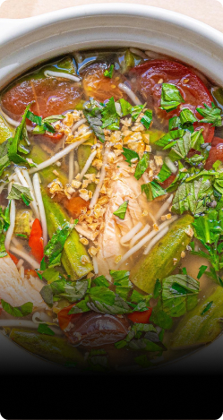
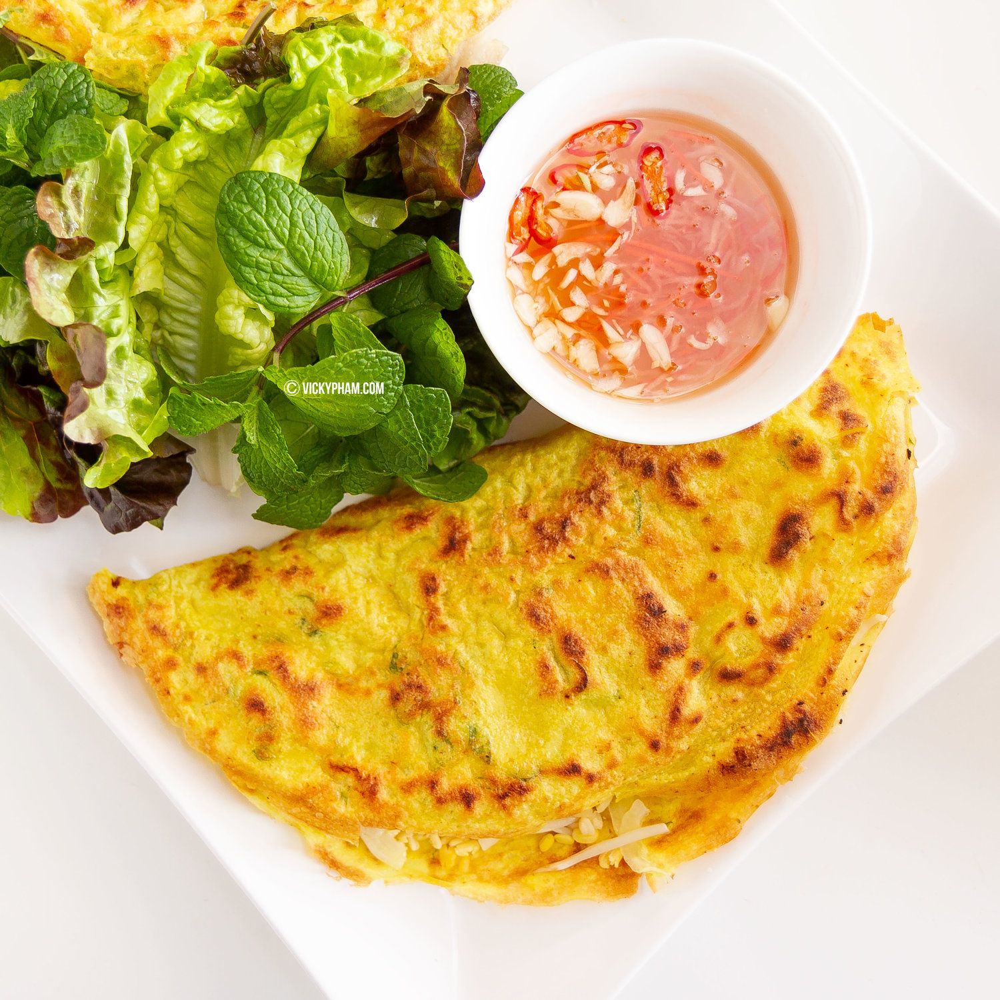
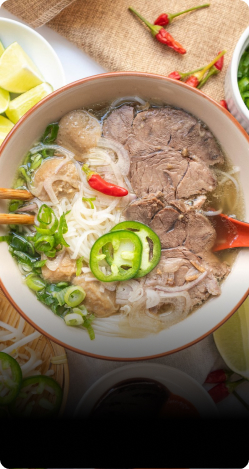

Bánh Ướt
Steamed Rice Noodle Sheets/Rolls
Intermediate
Serves 4
5 Minutes
1 Hour
Soft, delicate, and full of flavor, bánh ướt is a Vietnamese street food that you won't want to miss. These thin rice sheets are steamed to perfection and then served with various toppings, such as cucumbers, Vietnamese ham, beansprouts, and a flavorful dipping sauce.
INGREDIENTS
BATTER
- 1 cup rice flour
- 1/2 cup tapioca starch
- 1/2 potato starch (or same amount of tapioca starch)
- 4 cups water (room temperature)
- 1/2 teaspoon sea salt
TOPPINGS
- Thinly sliced lettuce
- Steamed or blanched bean sprouts
- Vietnamese ham (Cha Lua)
- Cucumbers
- Fried shallots and shallot oil
- Optional herbs (Thai basil, mint, and Vietnamese coriander)
Sauce
- Vietnamese sweet chil dipping sauce (Nuoc Cham)
LET'S GET COOKING!
List View
Card View
- Make the batter. Combine rice flour, tapioca starch, potato starch, salt and water. Mix together until flour and starches have completely dissolved. Let it sit for 30 minutes to bloom.
- Prepare a tray by greasing with shallot oil. Set aside. This will be used to place the finished rice rolls.
- Fill a large pot/skillet or a large steamer with about 2 inches of water. If using a large pot/skillet, place a shallow bowl or plate at the bottom of the pot to keep the baking pan from sitting directly in the water. Place the baking pan inside. I'm using a 9-inch round nonstick cake pan. Bring the water to a boil over medium-high heat.
- Pour about ⅓ cup of batter onto the baking pan and swirl it to form a thin even layer. Cover the pot with a lid and steam for about 2 minutes, or until the batter is translucent and cooked through.
- Use a wooden chopstick to trace the outline of the rice sheet along the edges to loosen them. The wooden chopstick prevents sticking. Use the chopstick to nudge one side of the rice sheet so you can lift it off. I find it too be much easier if you roll it off rather than lifting the whole sheet. If too fragile, allow the rice sheet to cool for about 30 seconds to 1 minute.
- Transfer the Banh Uot to the oiled tray and brush the sheet or rolls with more shallot oil to prevent sticking.
- Repeat the above steps until batter runs out. Once you get the hang of it, you can get multiple trays going at once.
- Repeat the above steps until batter runs out. Once you get the hang of it, you can get multiple trays going at once. Assemble 4-5 rolls or sheets per person. Top with desired vegetables and serve with a small bowl of sauce on the side for pouring or dipping and enjoy.
CRAVING SOMETHING ELSE?
Bánh Ướt
STEAMED RICE NOODLE SHEETS/ROLLS

Canh Chua Cá
sweet and sour fish soup

Bánh Xèo
Sizzling Crispy and Savory Crepes

Phở Bo
beef noodle soup
BE THE FIRST COMMENT!